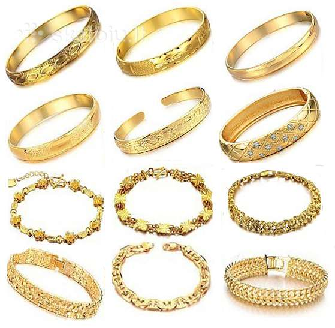

Apyrankės, papuosalai - papuosalu-parduotuve.lt
 Parašykite mums 8-613-13450 Nemokamas pristatymas nuo 20€ Galimybė apmokėti atsiimant 100% pinigų grąžinimo garantija Krepšelis 0 Produktas Prekės (tuščia)Prekių nėra
Nemokamas! Pristatymas 0,00 € VisoPirkti
Produktas sėkmingai pridėtas į pirkinių krepšelį Kiekis Viso Jūsų krepšelyje yra 0 prekiųJūsų krepšelyje yra viena prekė Prekės viso (su mok.) Viso pristatymas (su mok.) Nemokamas! Viso (su mok.) Tęsti apsipirkimą Pereiti prie apmokėjimo Papuošalų meniu Auskarai Sidabriniai auskarai DiDi auskarai Madingi auskarai Mediniai auskarai Rankų darbo auskarai Pagaminti Tailande Auskarai su akmenimis Apyrankės Odinės apyrankės Kitos madingos apyrankės Naujos Kelių sluoksnių apyrankės Natūralaus rago apyrankės Natūralaus akmens apyrankės Medinės apyrankės Kaklo papuošalai Grandinėlės Pakabukai Raidžių pakabukai Kiti kaklo papuošlai Stikliniai papuošalai Atsidarantys papuošalai - medalionai Sidabriniai auskarai Papuošalai poroms Raktų pakabukai Pakabukai ant kaklo poroms Porų apyrankės Laikrodžiai Vyriški laikrodžiai Moteriški laikrodžiai Dideli meškinai Apyrankės
Akcijos papuošalams
Santūrūs pakabukai porai
Vyriškas ir moteriškas juvleyrinio...
28,00 € -20% 35,00 € Visi pasiūlymaiKatalogas
Kraunama...
Parduotuvės informacija
Papuošalų pristatymas Taisyklės Apie mus Papuošalų grąžinimas Kontaktai Nemokamas prekių pakavimas Apmokėjimo būdai Apsipirkimo instrukcija Problemų sprendimasNaudinga
Papuošalų priežiūra Papuošalų pasirinkimas Papuošalų istorija
Apyrankės
Auskarai Sidabriniai auskarai DiDi auskarai Madingi auskarai Mediniai auskarai Rankų darbo auskarai Pagaminti Tailande Auskarai su akmenimis Kaklo papuošalai Grandinėlės Pakabukai Raidžių pakabukai Kiti kaklo papuošlai Stikliniai papuošalai Atsidarantys papuošalai - medalionai Apyrankės Odinės apyrankės Kitos madingos apyrankės Naujos Kelių sluoksnių apyrankės Natūralaus rago apyrankės Natūralaus akmens apyrankės Medinės apyrankės Papuošalų komplektai Laikrodžiai Vyriški laikrodžiai Moteriški laikrodžiai Papuošalai poroms Raktų pakabukai Pakabukai ant kaklo poroms Porų apyrankės Pagaminta Lietuvoje Rankų darbo auskarai Rankų darbo pakabukai Rankų darbo apyrankės Dovanų kuponai Dovanos Valentino dienos proga Dovanos moterims Dovanos vyrams Plieno apyrankės Apyrankės su magnetais Tailandietiški Medinės apyrankės Perveriami auskarai Mediniai auskarai Kauliniai auskarai Graviruojami Graviruojamos apyrankės Gintariniai papuošalai Rankų darbo papuošalai Apyrankės Dovanos Dideli meškinai Kalėdinės dovanos ApyrankėsApyrankės yra labai populiarūs papuošalai tiek tarp vyrų, tiek tarp moterų. Apyrankės savo populiarumu nenusileidžia auskarams ar kaklo papuošalams. Moterys itin daug dėmesio skiria rankų priežiūrai, o papildomas papuošalas jas visuomet gali papuošti. Perkant apyrankes internetu galite drąsiai, nesirūpindami dėl prekės kokybės. Jei paaiškės, kad...
Apyrankės yra labai populiarūs papuošalai tiek tarp vyrų, tiek tarp moterų. Apyrankės savo populiarumu nenusileidžia auskarams ar kaklo papuošalams. Moterys itin daug dėmesio skiria rankų priežiūrai, o papildomas papuošalas jas visuomet gali papuošti. Perkant apyrankes internetu galite drąsiai, nesirūpindami dėl prekės kokybės. Jei paaiškės, kad prekė ne tokia, kokios tikėjotės - gąžinkite ją ir atiduosime visus sumokėtus pinigus.
Papuosalu-parduotuve.lt suteikia galimybę įsigyti apyrankes internetu sau ar dovanai greitai ir patogiai. Įsitikinkite tuo dar šiandien.
DaugiauApyrankės
Yra 392 prekių.Subkategorijos
Odinės apyrankės
Odinės ar odos elementus turinčios apyrankės regis visuomet buvo ir bus madingos. Odiniai papuošalai pradėti gaminti vieni pirmųjų, o išlieka populiarūs iki pat šių dienų. Natūrali oda, kaip ir visos natūralios medžiagos, žmogui yra malonesnė, nei sintetinės. Odinės apyrankės yra universalios - jos tinka ir solidžiam verslininkui ir jaunam maištautojui. Jos ne tik tinka, bet ir pabrėžia skirtingus asmens bruožus. Negana to, ta pati apyrankė vienaip atrodo ant vyriškos rankos, kitaip - ant moteriškos, tačiau tinka ir tokiai ir tokiai. Net jei apyrankė ir skirta vyrams, neretai ji puikiai tinka ir moterims.
Beveik visos odos apyrankės yra rankų darbo. Oda nėra lengvai apdirbama fabrikuose, o įdedant rankų darbo jos tampa unikalesnės.
Jei apyrankė turi odos elementus, kiti jos elementai dažniausiai irgi būna natūralūs, artimi žmogaus prigimčiai. Natūralių pluoštų virvelės, mediniai karoliukai puikiai jas papuošia.
Apyrankės internetu - šiuolaikinė galimybė įsigyti odinių apyrankių, neišeinant iš namų.
Kitos madingos apyrankės
Apyrankės visuomet yra madingos. Kartais iskirtinis apyrankių stilius suteikia joms didžiausią vertę. Nepriklausomai nuo to iš ko apyrankė pagaminta, visuomet svarbiausia jos išvaizda. Įvairių stilingų apyrankių visuomet galite rasti papuosalu-parduotuve.lt. Įsigykite apyrankę internetu šiandien, o ryt jau galėsite ja džiaugtis savo namuose. Jei mūsų parduotuvėje nerasite norimos apyrankės - parašykite arba paskambinkite mums. Pasirūpisnime, kad pageidaujamų apyrankių atsirastų mūsų parduotuvėje. O Jūs norimas apyrankes įsigysite su didžiule nuolaida. Siekiame, kad parduotuvėje parduodami papuošalai patenkintų visų lūkesčius, tad Jūsų atsiliepimai ir pageidavimai visada labai svarbūs.
Naujos
Ieškote kažko madingo sau ar savo artimam žmogui? Čia rasite madingas apyrankes tiek vyrams tiek ir moterims. Apyrankes galite įsigyti internetu arba parduotuvėje Kaune. Šioje kategorijoje rasite tik karštas šio sezono naujienas, su kuriomis bus negėda pasirodyti nei jaunimo vakarėlyje nei ištaigingoje puotoje ar verslo susitikime. Pasistengsime, kad apyrankes pagal savo skonį čia rastų visi. Čia rasite įprastų sidabinių, odinių ir kitų bižuterinių apyrankių Tačiau tai ne viskas. Čia rasite ir apyrankių pagamintų iš natūralaus akmens ar buivolo rago. Apyrankes importuojame iš viso pasaulio. Tad parduotuvėje rasite ne tik lietuviškų gaminių, bet ir apyrankių iš Indijos, Tailando, Vietnamo ir kitų egzotinių šalių.
Kelių sluoksnių apyrankės
Jaunimo tarpe itin populiarios kelių sluoksnių apyrankės. Spalvingos, dažniausiai odinės, su įvairiais pakabukais. Nebrangūs ir madingi papuošalai internetu. Jaunimo tarpe šios apyrankės labai mįgiamos dėl didelės spalvų įvairovės bei nedidelės kainos. Šios kelių sluoksnių apyrankės pagamintos iš odos ar tekstilinių virvelių. Kadangi brangieji metalai šių apyrankių gamyboje nenaudojami - tai atsiliepia ir jų kainoje. Jų kaina dažniausiai nesiekia dešimties eurų. Tad tokią apyrankę sau leisti gali praktiškai bet kas. Šios apyrankės dažnai pagražinamos įvairiais metaliniais simboliais - širdelėmis, žvaigždutėmis, inkarais, sparnais, užrašais, įvairių gyvūnų simbolika. Jei kategorijoje neradote norimos apyrankės - keipkitės ir pasistengsime ją turėti savo asortimente artimiausiu metu.
Natūralaus rago apyrankės
Ieškote išskirtinės apyrankės? Ar pagalvojote apie papuošalus iš netradicinių medžiagų. Apyrankės iš juvelyrinių metalų ar odos jau nieko nebestebina. O galbūt verta pagalvit apei egzotiškesnį variantą - apyrankes iš buivolo rago? Tik nereikia galvoti, kad buivolai žudomi dėl savo ragų. Nereikia maišyti to su dramblio kaulu. Buivolas nėra nykstantis gyvūnas, be to jie dažbai nuraginami vien tam, kad galėtų vaugti bandose ir nežalotų vieni kitų. Be to ragus jie kartais pameta. Tad jei mylite gyvūnus - nepergyvenkite. Nešiodami buivolo rago apyrankes tikrai nepakenksite šiems gyvūnams. Buvilo rago apyrankės gaminamos vietname. Kiekviena apyrankė gaminama rankomis, tad yra išskirtinė ir nepakartojama. Kiekviena apyrankė nušlifuojama ir kelis kartus lakuojama, kad įgautų blizgesį ir būtų atspari aplinkos poveikiui. Natūralaus rago apyrankės - subtili prabanga tinkanti tiek jaunai merginai tiek vyresnio amžiaus moteriai.
Natūralaus akmens...
Natūralaus akmens apyrankės - ne senovinis, bet šiuolaikinis papuošalas. Tai iš įvairių akmenų suverti papuošalai. Apyrankėms retai naudojami Lietuvoje randami akmenys. Dažniausiai jos gaminamos iš užsienyje randamų akmenų, kurie tam labiau tinkami tiek savo išvaizda, tiek ir energetinėmis savybėmis. Tam dažniausiai naudojami ametistas, bazaltas ar net lavos akmuo. Kiekvienas akmuo turi išskirtines savybes - plačiau apie kiekvieną jų rasite prie paties papuošalo.
Akmens apyrankės yra masyvios, bet nesunkios - jas gali nešioti ir vaikai. Svoris nurodytas prie kiekvienos apyrankės. Kadangi jos dažniausiai yra tamprios ir ant rankos uždedamos be jokių užsegimų - jų dydis universlaus. Nereikia sukti galvos - apyrankė tiks kiekvienam. Kadangi akmuo yra itin ilgaamžis tai ir apyrankė nesusitrins, nepasens. Tai praktiškai amžinas papuošalas. Ir žinoma amžinai madingas.
Medinės apyrankės
Rodyti: Tinklelis Sąrašas Ankstesnis 1 2 3 4 Sekantis Rodoma 1 - 99 iš 392 dalykų Greita peržiūra 5,80 €Moteriška apyrankė Begalybė
Papuošalo tipas: apyrankė Apyrankės ilgis: 20cm Apyrankės prailginimas: 6 cm
5,80 € Į krepšelį Daugiau Išparduota Pridėti palyginimui Greita peržiūra 23,89 € 31,86 € -25%Plati odinė apyrankė su sagtimi
Papuošalo tipas: apyrankė Apyrankės ilgis: 28,5cm Apyrankės plotis: 5cm Medžiaga: oda Prekės ID: 116
23,89 € 31,86 € -25% Į krepšelį Daugiau Sumažinta kaina! Yra sandėlyje Pridėti palyginimui Greita peržiūra 8,40 € 16,80 € -50%Apyrankė suvertukas
Universalaus dydžio odinė apyrankė (19-26cm)
8,40 € 16,80 € -50% Į krepšelį Daugiau Sumažinta kaina! Yra sandėlyje Pridėti palyginimui Greita peržiūra 30,00 €Buivolo rago apyrankė Driežas
Išskirtinis vienetinis papuošalas pagamintas Vietname.Apyrankė pagaminta iš tikro buvilo rago.Tai autentiškas rankų darbo gaminys, tad antro lygiai tokio pačio niekur nerasite. Apyrankės dydis plačiausioje vietoje: 6,5cm.Apyrankėje išpjaustytas driežiuko simbolis. Ji dažyta ir tris kartus lakuota, tad blizgi ir labai lengvai valoma.Prekės ID: 1105
30,00 € Į krepšelį Daugiau Yra sandėlyje Pridėti palyginimui Greita peržiūra 15,00 €Žalsva apyrankė APR1147
Apyrankės ilgis - 19 cm. Karoliuko dydis - 0.5-0.8 cm. Prekės ID - 1147
15,00 € Į krepšelį Daugiau Yra sandėlyje Pridėti palyginimui Greita peržiūra 18,00 €Ruda medinė apyrankė Bangelė
Natūralaus medžio apyrankė. Dydis - universalus. Prekės ID - 1496
18,00 € Į krepšelį Daugiau Yra sandėlyje Pridėti palyginimui Greita peržiūra 18,40 €Stambi moteriška vintažinė apyrankė
Stambi, vintažinio stiliaus, dirbtinio akmens moteriška apyrankė. Apyrankės ilgis: 18cm Papuošalo ID: 572
18,40 € Į krepšelį Daugiau Išparduota Pridėti palyginimui Greita peržiūra 18,20 € 26,00 € -30%Odinė apyrankė su karoliukais Žvaigždutė
Kelių sluoksnių odinė apyrankė Apyrankės ilgis: ~22cm (Yra du užsegimo ilgiai) Apyrankės ilgiai apie riešą: 18,5cm ir 21cm Prekės ID: 604
18,20 € 26,00 € -30% Į krepšelį Daugiau Sumažinta kaina! Yra sandėlyje Pridėti palyginimui Greita peržiūra 30,00 €Buivolo rago apyrankė Driežas 2
Išskirtinis vienetinis papuošalas pagamintas Vietname.Apyrankė pagaminta iš tikro buivolo rago.Tai autentiškas rankų darbo gaminys, tad antro lygiai tokio pačio niekur nerasite. Apyrankės dydis plačiausioje vietoje: 6,5cm.Apyrankėje išpjaustytas driežiuko simbolis. Apyrankė dažyta ir triskart lakuota, tad blizgi ir labai lengvai valoma.Prekės ID: 1106
30,00 € Į krepšelį Daugiau Yra sandėlyje Pridėti palyginimui Greita peržiūra 15,00 €Mėlynų akmenukų apyrankė APR1148
Apyrankės ilgis - 19 cm. Akmenuko skersmuo - 0.5 - 0.8 cm. Prekės ID - 1148
15,00 € Į krepšelį Daugiau Yra sandėlyje Pridėti palyginimui Greita peržiūra 18,00 €Medinė banguota apyrankė Trys spalvos
Natūralaus medžio universalaus dydžio apyrankė. Prekės ID - 1497
18,00 € Į krepšelį Daugiau Yra sandėlyje Pridėti palyginimui Greita peržiūra 22,59 €Apyrankė Virvelės
Papuošalas: apyrankė Apyrankės plotis: 3.5cm Apyrankės ilgis: 22cm Reguliuojamas ilgis Prekės ID: 96
22,59 € Į krepšelį Daugiau Yra sandėlyje Pridėti palyginimui Greita peržiūra 15,60 €Kelių sluoksnių klasikinė apyrankė
Kelių sluoksnių moteriška apyrankė. Galite nešioti tiek visas dalis iš karto tiek po vieną. Bendras visų apyrankės dalių plotis: 7.5 cm Apyrankės masė: 59g Papuošalo ID: 575
15,60 € Į krepšelį Daugiau Yra sandėlyje Pridėti palyginimui Greita peržiūra 22,80 €Klasikinė rankų darbo apyrankė
Klasikinė kelių sloksnių apyrankė pagaminta rankomis. Apyrankės ilgis: 21.5cm Apyrankės plotis: 10mm Pagaminta iš odos, virvelių ir metalinio užsegimo. Apyrankės masė: 10g Prekės ID: 630
22,80 € Į krepšelį Daugiau Yra sandėlyje Pridėti palyginimui Greita peržiūra 28,00 €Rankų darbo apyrankė iš buivolo rago
Išskirtinis vienetinis papuošalas pagamintas Vietname.Apyrankė pagaminta iš tikro buivolo rago.Tai autentiškas rankų darbo gaminys, tad antro lygiai tokio pačio niekur nerasite. Apyrankės dydis plačiausioje vietoje: 6,5cm.Apyrankė dažyta ir triskart lakuota, tad blizgi ir labai lengvai valoma. Prekės ID: 1107
28,00 € Į krepšelį Daugiau Yra sandėlyje Pridėti palyginimui Greita peržiūra 15,00 €Juodų akmenėlių apyrankė APR1149
Apyrankės ilgis - 19 cm. Akmenėlio dydis - 0.5 - 0.8 cm. Prekės ID - 1149
15,00 € Į krepšelį Daugiau Yra sandėlyje Pridėti palyginimui Greita peržiūra 18,00 €Medinė banguota apyrankė Dvi spalvos
Natūralaus medžio universalaus dydžio apyrankė. Prekės ID - 1498.
18,00 € Į krepšelį Daugiau Yra sandėlyje Pridėti palyginimui Greita peržiūra 11,82 € 13,90 € -15%Juoda stilinga apyrankė
Papuošalas: apyrankė. Apyrankės išorinis skersmuo: 7.2cm. Vieno segmento skersmuo: 2.2cm. Prekės ID: 69
11,82 € 13,90 € -15% Į krepšelį Daugiau Sumažinta kaina! Yra sandėlyje Pridėti palyginimui Greita peržiūra 18,50 €Ruda odinė apyrankė
Apyrankė, tinkanti tiek vyrams, tiek moterims Apyrankės ilgis reguliuojamas: 18, 20 , 22 cm Apyrankės plotis: 2 cm Medžiaga: natūrali oda Prekės ID: 511
18,50 € Į krepšelį Daugiau Yra sandėlyje Pridėti palyginimui Greita peržiūra 15,60 €Plati vientisa 18k auksu dengta apyrankė
Vientisa plati moteriška apyrankė dengta 18k ausko danga. Apyrankės dydis: 62 x 55mm Papuošalo ID: 576
15,60 € Į krepšelį Daugiau Yra sandėlyje Pridėti palyginimui Greita peržiūra 25,80 €Odinė apyrankė su kryželiais
Tailandietiška plati odinė apyrankė Apyrankės dydis: 5,5 x 23,5 cm Apyrankės ilgis ant riešo: 19,5cm arba 21,5cm Prekės ID: 661
25,80 € Į krepšelį Daugiau Yra sandėlyje Pridėti palyginimui Greita peržiūra 28,00 €Rankų darbo apyrankė iš buivolo rago
Išskirtinis vienetinis papuošalas pagamintas Vietname.Apyrankė pagaminta iš tikro buivolo rago.Tai autentiškas rankų darbo gaminys, tad antro lygiai tokio pačio niekur nerasite. Apyrankės dydis plačiausioje vietoje: 5,8cm.Apyrankė dažyta ir triskart lakuota, tad blizgi ir labai lengvai valoma. Prekės ID: 1108
28,00 € Į krepšelį Daugiau Yra sandėlyje Pridėti palyginimui Greita peržiūra 18,00 €Medinė banguota apyrankė Balta
Natūralaus medžio universalaus dydžio apyrankė. Prekės ID - 1499.
18,00 € Į krepšelį Daugiau Yra sandėlyje Pridėti palyginimui Greita peržiūra 12,45 €Plati moteriška geltona apyrankė
Papuošalo tipas: apyrankė. Skirta: moterims. Apyrankės tipas: rankogalių apyrankė. Metalas: lydynys. Forma: pynė. Dydis: universalus.
12,45 € Į krepšelį Daugiau Yra sandėlyje Pridėti palyginimui Greita peržiūra 10,14 €Odinė apyrankė Virvelės
Papuošalo tipas: apyrankė Apyrankės ilgis: 16cm Apyrankės prailginimas: 6cm Apyrankės plotis: 1,5cm Medžiaga: oda Apyrankės spalva: juoda arba ruda
10,14 € Į krepšelį Daugiau Yra sandėlyje Pridėti palyginimui Greita peržiūra 10,00 €Apyrankė Jūra
Apyrankės ilgis: 20cm + 5cm užsegimo grandinėlė Didžioji jūros žvaigždė 4.5cm x 4cm Mažoji jūros žvaigžė 2.5cm x 2.7cm Didžioji kriauklė: 2.6cm x 1.5cm Papuošalo ID: 623
10,00 € Į krepšelį Daugiau Yra sandėlyje Pridėti palyginimui Greita peržiūra 31,00 €Odinė apyrankė perrišta mazgais
Tailandietiška odinė apyrankė Apyrankės dydis: 6 x 24 cm Ilgis ant riešo: 19,5cm arba 22cm Prekės ID: 662
31,00 € Į krepšelį Daugiau Yra sandėlyje Pridėti palyginimui Greita peržiūra 32,00 €Apyrankė Spiralė (pagaminta iš kaulo)
Išskirtinis papuošalas pagamintas Vietname.Apyrankė pagaminta iš tikro buivolo kaulo. Prekė gali šiek tiek skirtis nuo pavaizduoto nuotraukoje, nes tai rankų darbo papuošalas iš natūralaus rago ir kiekviena apyrankė skiriasi nuo kitos. Apyrankės dydis plačiausioje vietoje: 6.7cm.Apyrankė spiralės formos - dažyto ir lakuoto paviršiaus. Prekės ID: 1109
32,00 € Į krepšelį Daugiau Yra sandėlyje Pridėti palyginimui Greita peržiūra 18,00 €Marga medinė apyrankė APR 1500
Lietuvoje pagaminta natūralaus medžio marga apyrankė. Prekės ID - 1500
18,00 € Į krepšelį Daugiau Yra sandėlyje Pridėti palyginimui Greita peržiūra 11,01 €Apyrankė D raidė
Vardinė D raidės apyrankė.
11,01 € Į krepšelį Daugiau Yra sandėlyje Pridėti palyginimui Greita peržiūra 21,14 €Juoda odinė apyrankė
21,14 € Į krepšelį Daugiau Yra sandėlyje Pridėti palyginimui Greita peržiūra 12,00 €
Geltonų karolių apyrankė Gintarai
Moteriška apyrankė iš geltonų karoliukų su gintaro imitacija. Papuošalo ID: 624
12,00 € Į krepšelį Daugiau Yra sandėlyje Pridėti palyginimui Greita peržiūra 18,00 €Medinė apyrakė Margi žvynai
Universalaus dydžio medinė apyrankė. Prekės ID - 1501
18,00 € Į krepšelį Daugiau Yra sandėlyje Pridėti palyginimui Greita peržiūra 14,00 €Odinė apyrankė Pynė
14,00 € Į krepšelį Daugiau Yra sandėlyje Pridėti palyginimui Greita peržiūra 16,00 €
Spalvotų medinių karoliukų apyrankė
Apyrankė iš spalvotų medinių karoliukų. Papuošalo ID: 632
16,00 € Į krepšelį Daugiau Yra sandėlyje Pridėti palyginimui Greita peržiūra 29,00 €Užmaunama apyrankė iš Kaulo
Vietame pagaminta apyrankė iš buivolo rago.Prekė gali šiek tiek skirtis nuo pavaizduoto nuotraukoje, nes tai rankų darbo papuošalas iš natūralaus rago ir kiekviena apyrankė skiriasi nuo kitos. Apyrankės dydis plačiausioje vietoje: 6.8cm.Apyrankė tris kartus lakuota, tad labai lengvai valoma. Prekės ID: 1111
29,00 € Į krepšelį Daugiau Yra sandėlyje Pridėti palyginimui Greita peržiūra 30,00 €Spalvotų akmenėlių apyrankė APR1182
Apyrankės ilgis - 19 cm. Karoliuko skersmuo - 0.8 cm. Prekės ID - 1182
30,00 € Į krepšelį Daugiau Yra sandėlyje Pridėti palyginimui Greita peržiūra 18,00 €Medinė apyrakė Rudi žvynai
Universalaus dydžio medinė apyrankė. Prekės ID - 1502
18,00 € Į krepšelį Daugiau Yra sandėlyje Pridėti palyginimui Greita peržiūra 10,43 €Apyrankė BF love
10,43 € Į krepšelį Daugiau Yra sandėlyje Pridėti palyginimui Greita peržiūra 9,80 €
Apyrankė Paukšteliai
Kelių sluoksnių apyrankė "Paukščiai" Ilgis: ~16cm Su odos elementais Prekės ID: 577
9,80 € Į krepšelį Daugiau Yra sandėlyje Pridėti palyginimui Greita peržiūra 12,00 €Spygliuota apyrankė
Juoda apyrankė su 13 sidabro spalvos spyglių.Papuošalo ID: 748
12,00 € Į krepšelį Daugiau Išparduota Pridėti palyginimui Greita peržiūra 16,50 €Gintaro apyrankė
Apyrankė iš suvertų gintaro gabaliukų Papuošalo ID: 870
16,50 € Į krepšelį Daugiau Išparduota Pridėti palyginimui Greita peržiūra 28,00 €Rankų darbo apyrankė iš buivolo rago
Išskirtinis vienetinis papuošalas pagamintas Vietname.Apyrankė pagaminta iš tikro buivolo rago.Tai autentiškas rankų darbo gaminys, tad nuotrauka nuo realaus gaminio gali šiek tiek skirtis. Tiesiog dviejų vienodų apyrankių pagaminti tiesiog neįmanoma.Apyrankės dydis plačiausioje vietoje: 6,3cm.Apyrankė dažyta ir triskart lakuota, tad blizgi ir labai...
28,00 € Į krepšelį Daugiau Yra sandėlyje Pridėti palyginimui Greita peržiūra 27,00 €Akmeninė apyrankė Buda
Apyrankės ilgis - 19 cm. Karoliuko skersmuo - 0.8 cm. Prekės ID - 1183
27,00 € Į krepšelį Daugiau Yra sandėlyje Pridėti palyginimui Greita peržiūra 18,00 €Medinė apyrankė Šiesiai ruda
Universalaus dydžio medinė apyrankė. Prekės ID - 1503
18,00 € Į krepšelį Daugiau Yra sandėlyje Pridėti palyginimui Greita peržiūra 17,09 €Apyrankė Gyvatė
17,09 € Į krepšelį Daugiau Yra sandėlyje Pridėti palyginimui Greita peržiūra 8,00 €
Balta apyrankė Sister
Kelių sluoksnių baltos spalvos apyrankė "Paukščiai" Ilgis: ~16cm (reguiuojamo ilgio užsegimo grandinėlė) Prekės ID: 602
8,00 € Į krepšelį Daugiau Yra sandėlyje Pridėti palyginimui Greita peržiūra 26,00 €Violetinės spalvos apyrankė APR1270
Apyrankės ilgis - 22 cm. Prekės ID - 1270
26,00 € Į krepšelį Daugiau Yra sandėlyje Pridėti palyginimui Greita peržiūra 18,00 €Medinė apyrankė Tamsiai ruda
Universalaus dydžio medinė apyrankė. Prekės ID - 1504
18,00 € Į krepšelį Daugiau Yra sandėlyje Pridėti palyginimui Greita peržiūra 8,00 €Kelių sluoksnių apyrankė Dream - believe
Kelių sluoksnių apyrankė "Dream - Believe" Ilgis: ~16cm Su odos elementais Prekės ID: 603
8,00 € Į krepšelį Daugiau Yra sandėlyje Pridėti palyginimui Greita peržiūra 8,50 €Moteriška apyrankė Širdelė
Moteriška apyrankė su kabančia širdele.Papuošalo ID: 750
8,50 € Į krepšelį Daugiau Išparduota Pridėti palyginimui Greita peržiūra 25,00 €Užmaunama apyrankė iš Kaulo
Vietame pagaminta apyrankė iš buivolo rago.Prekė gali šiek tiek skirtis nuo pavaizduoto nuotraukoje, nes tai rankų darbo papuošalas iš natūralaus rago ir kiekviena apyrankė skiriasi nuo kitos. Apyrankės dydis plačiausioje vietoje: 6.7cm (riešo storis).Apyrankė tris kartus lakuota, tad labai lengvai valoma.Apyrankės plotis: 3,5cm Prekės ID: 1114
25,00 € Į krepšelį Daugiau Yra sandėlyje Pridėti palyginimui Greita peržiūra 16,00 €Natūralaus akmens apyrankė Leopardas
Apyrankės ilgis - 19 cm. Karoliuko skersmuo - 0.8 cm. Prekės ID - 1282
16,00 € Į krepšelį Daugiau Yra sandėlyje Pridėti palyginimui Greita peržiūra 18,00 €Medinė apyrankė Dviejų spalvų
Universalaus dydžio medinė apyrankė. Prekės ID - 1505
18,00 € Į krepšelį Daugiau Yra sandėlyje Pridėti palyginimui Greita peržiūra 12,60 €Apyrankė Best friend su akimi
Kelių sluoksnių apyrankė su akimi ir užrašu "Best friend" Ilgis: 17cm Masė: 12 g Su odos elementais Prekės ID: 620
12,60 € Į krepšelį Daugiau Yra sandėlyje Pridėti palyginimui Greita peržiūra 16,40 €Apyrankė Italy
Apyrankė "Italy".Papuošalo ID:760
16,40 € Į krepšelį Daugiau Yra sandėlyje Pridėti palyginimui Greita peržiūra 15,00 € Išpardavimas!Šiuolaikiška apyrankė Mėlynas inkaras
Ilga medvilnės apyrankė su stilingu užsegimu Apyrankės ilgis: 63cm (apyrankė apsuka riešą 2-3 kartus) Apyrankės storis: 5mm Inkaro plotis: 2,2cm Inkaro ilgis: 3,3cm Prekės ID: 850
15,00 € Į krepšelį Daugiau Yra sandėlyje Pridėti palyginimui Greita peržiūra 34,00 €Užmaunama apyrankė iš Kaulo
Vietame pagaminta apyrankė iš buivolo rago.Prekė gali šiek tiek skirtis nuo pavaizduoto nuotraukoje, nes tai rankų darbo papuošalas iš natūralaus rago ir kiekviena apyrankė skiriasi nuo kitos. Apyrankės dydis plačiausioje vietoje: 6.5cm (riešo storis).Apyrankė tris kartus lakuota, tad labai lengvai valoma.Apyrankės plotis: 2,5cm Prekės ID: 1115
34,00 € Į krepšelį Daugiau Yra sandėlyje Pridėti palyginimui Greita peržiūra 16,00 €Ruda apyrankė APR1283
Apyrankės ilgis - 19 cm. Karoliuko skersmuo - 0.8 cm. PRekės ID - 1283
16,00 € Į krepšelį Daugiau Yra sandėlyje Pridėti palyginimui Greita peržiūra 18,00 €Medinė apyrankė Du bananai
Universalaus dydžio medinė apyrankė. Prekės ID - 1506
18,00 € Į krepšelį Daugiau Yra sandėlyje Pridėti palyginimui Greita peržiūra 11,30 €Raudona apyrankė
11,30 € Į krepšelį Daugiau Išparduota Pridėti palyginimui Greita peržiūra 7,00 € 14,00 € -50%
Apyrankė suvertukas 1
Universalaus dydžio odinė apyrankė (19-26cm)
7,00 € 14,00 € -50% Į krepšelį Daugiau Sumažinta kaina! Yra sandėlyje Pridėti palyginimui Greita peržiūra 38,00 €Tamsi buivolo rago apyrankė
Tamsi buivolo rao apyrankė pagmainta Vietname.Išskirtinis rankų darbo aksesuaras. Apyrankės dydis plačiausioje vietoje: 6,8cm (riešo storis).Apyrankės plotis storiausioje vietoje: 5cm.Apyrankė dažyta ir triskart lakuota, tad blizgi ir labai lengvai valoma. Prekės ID: 1116
38,00 € Į krepšelį Daugiau Yra sandėlyje Pridėti palyginimui Greita peržiūra 17,00 €Natūralaus akmens apyrankė Buda
Apyrankės ilgis - 19 cm. Karoliuko skersmuo - 0.8 cm. Prekės ID - 1284
17,00 € Į krepšelį Daugiau Yra sandėlyje Pridėti palyginimui Greita peržiūra 11,30 €Moteriška apyrankė su drugeliu
11,30 € Į krepšelį Daugiau Yra sandėlyje Pridėti palyginimui Greita peržiūra 26,00 €
Graviruojama eko odos apyrankė
Eko odos apyrankė su lentele graviravimui Apyrankės dydis: 24 x 4 cm Reguliuojamas ilgis apie riešą: 20,5, 19, 17,5, 16 cm Dirbtinai sendinta išvaizda Prekės ID: 846
26,00 € Į krepšelį Daugiau Yra sandėlyje Pridėti palyginimui Greita peržiūra 39,00 €Stilinga juoda apyrankė iš buivolo rago
Išskirtinis vienetinis papuošalas pagamintas Vietname.Apyrankė pagaminta iš natūralaus buivolo rago.Apyrankės dydis plačiausioje vietoje: 5,2cm.APYRANKĖ NEDIDELĖ, TAD REKOMENDUOJAMA MERGINOMS SU SIAURU RIEŠU.Apyrankė dažyta ir triskart lakuota, tad blizgi ir labai lengvai valoma. Prekės ID: 1117
39,00 € Į krepšelį Daugiau Yra sandėlyje Pridėti palyginimui Greita peržiūra 29,00 €Natūralaus akmens apyrankė Juoda
Apyrankės ilgis - 19 cm. Prekės ID - 1325
29,00 € Į krepšelį Daugiau Yra sandėlyje Pridėti palyginimui Greita peržiūra 9,85 €Odinė jaunimo apyrankė
9,85 € Į krepšelį Daugiau Yra sandėlyje Pridėti palyginimui Greita peržiūra 10,64 € 13,30 € -20%
Moteriška Jūros apyrankė
10,64 € 13,30 € -20% Į krepšelį Daugiau Sumažinta kaina! Yra sandėlyje Pridėti palyginimui Greita peržiūra 39,00 €
Stilinga daugiasluoksnė apyrankė (7 dalių)
Išskirtinis vienetinis papuošalas pagamintas Vietname.7 dalių apyrankių rinkinys. Papuošalas tiek jaunai merginai tiek solidžiai damai.Apyrankės plotis net 7,2cm, tad ją užsidėti nebus jokių problemų.Apyrankė dažyta ir tris kartus lakuota, tad atrodo itin stilingai. O su priežiūra nebus jokių rūpesčių. Prekės ID: 1118
39,00 € Į krepšelį Daugiau Yra sandėlyje Pridėti palyginimui Greita peržiūra 30,00 €Natūralaus akmens apyrankė Emperor
Apyrankės ilgis - 19 cm. Karoliuko skersmuo - 0.8 cm. Prekės ID - 1326
30,00 € Į krepšelį Daugiau Yra sandėlyje Pridėti palyginimui Greita peržiūra 24,65 € 29,00 € -15%Odinė apyrankė Elnias
Odinė apyrankė su sagtimi Apyrankės ilgis: 26cm Apyrankės plotis plačiausioje vietoje: 4cm Apyrankės dirželio plotis: 1.6cm Skirta vyrams ir moterims Prekės ID: 429
24,65 € 29,00 € -15% Į krepšelį Daugiau Sumažinta kaina! Yra sandėlyje Pridėti palyginimui Greita peržiūra 17,00 €Dviejų sluoksnių odinė apyrankė 628
Dviejų sluoksnių rankų darbo apyrankė Apyrankės ilgis: 21cm Apyrankės plotis: 11mm Pagaminta iš odos, virvelių ir metalinio užsegimo. Apyrankės masė: 9g Prekės ID: 628
17,00 € Į krepšelį Daugiau Yra sandėlyje Pridėti palyginimui Greita peržiūra 37,00 €Moteriška užmaunama payrankė iš Vietnamo
Vietame pagaminta moteriška apyrankė iš buivolo rago.Prekė gali šiek tiek skirtis nuo pavaizduoto nuotraukoje, nes tai rankų darbo papuošalas iš natūralaus rago ir kiekviena apyrankė skiriasi nuo kitos. Apyrankės dydis plačiausioje vietoje: 6.7cm (riešo storis).Apyrankė tris kartus lakuota, tad labai lengvai valoma.Apyrankės plotis: 3,1cm Prekės ID: 1119
37,00 € Į krepšelį Daugiau Yra sandėlyje Pridėti palyginimui Greita peržiūra 25,00 €Natūralaus akmens apyrankė Balta
Apyrankės ilgis - 19 cm. Akmenuko skersmuo - 1 cm. Prekės ID - 1327
25,00 € Į krepšelį Daugiau Yra sandėlyje Pridėti palyginimui Greita peržiūra 15,40 €Rankų darbo odinė apyrankė
Originali kelių sluoksnių apyrankė iš odos, pagainta rankomis. Apyrankės ilgis: 22cm Apyrankės plotis: 10mm Pagaminta iš odos, virvelių ir metalinio užsegimo. Apyrankės masė: 13g Prekės ID: 629
15,40 € Į krepšelį Daugiau Yra sandėlyje Pridėti palyginimui Greita peržiūra 15,00 €Apyrankės Believe
Porų apyrankės "Believe".Spalvos: Mėlyna ir ružava.Papuošalo ID:777
15,00 € Į krepšelį Daugiau Yra sandėlyje Pridėti palyginimui Greita peržiūra 18,25 €Akmeninė apyrankė Ovalas
Apyrankės ilgis - 19 cm. Akmenuko skersmuo - 0.8 cm. Prekės ID - 1350
18,25 € Į krepšelį Daugiau Yra sandėlyje Pridėti palyginimui Greita peržiūra 19,00 €Ruda odinė apyrankė
Juoda odinė apyrankė.Papuošalo ID:780
19,00 € Į krepšelį Daugiau Yra sandėlyje Pridėti palyginimui Greita peržiūra 48,00 €Moteriška apyrankė iš buivolo kaulo
Išskirtinis vienetinis papuošalas pagamintas Vietname.Apyrankė pagaminta iš tikro buivolo rago.Tai autentiškas rankų darbo gaminys, tad antro lygiai tokio pačio niekur nerasite. Apyrankės dydis plačiausioje vietoje: 6,3cm (riešo storis).Apyrankės plotis: 5,3cm. Apyrankė dažyta ir triskart lakuota, tad blizgi ir labai lengvai valoma. Prekės ID: 1121
48,00 € Į krepšelį Daugiau Yra sandėlyje Pridėti palyginimui Greita peržiūra 15,00 €Dviguba apyrankė Tigro akis
Apyrankės ilgis - 19 cm. Karoliuko skersmuo - 0.8 cm. Prekės ID - 1351
15,00 € Į krepšelį Daugiau Yra sandėlyje Pridėti palyginimui Greita peržiūra 12,00 €Apyrankė Už Lietuvą
12,00 € Į krepšelį Daugiau Yra sandėlyje Pridėti palyginimui Greita peržiūra 9,99 € 11,30 €
Moteriška apyrankė Juodoji lūšis
9,99 € 11,30 € Į krepšelį Daugiau Sumažinta kaina! Išparduota Pridėti palyginimui Greita peržiūra 18,90 € 21,00 € -10%
Plati žalia odinė apyrankė
Odinė apyrankė, tinkanti abiems lytims Apyrankės ilgis: 27 cm (reguliuojamas) Apyrankės plotis: 5 cm Užsegimas - dvi sagtys Prekės ID: 512
18,90 € 21,00 € -10% Į krepšelį Daugiau Sumažinta kaina! Yra sandėlyje Pridėti palyginimui Greita peržiūra 38,00 €Buivolo rago apyrankė merginai
Išskirtinis vienetinis papuošalas pagamintas Vietname.Apyrankė pagaminta iš natūralaus buivolo rago.Apyrankės dydis plačiausioje vietoje: 5,2cm.APYRANKĖ NEDIDELĖ, TAD REKOMENDUOJAMA MERGINOMS SU SIAURU RIEŠU.Apyrankė dažyta ir triskart lakuota, tad blizgi ir labai lengvai valoma. Prekės ID: 1122
38,00 € Į krepšelį Daugiau Yra sandėlyje Pridėti palyginimui Greita peržiūra 15,00 €Balta universali apyrankė APR 1061
Apyrankės ilgis - 19.5 cm. Apyrankės plotis - 1.2 cm. Prekės ID: 1061
15,00 € Į krepšelį Daugiau Yra sandėlyje Pridėti palyginimui Greita peržiūra 30,00 €Buivolo rago apyrankė Lapas
Apyrankės skersmuo - 6.3 cm. Apyrankės plotis - 4.8 cm. Prekės ID - 1402
30,00 € Į krepšelį Daugiau Yra sandėlyje Pridėti palyginimui Greita peržiūra 15,00 €Baltas moteriškas dirželis
Dirželio plotis - 0.8 cm. Dirželio ilgis - 93 cm. Prekės ID: 1062
15,00 € Į krepšelį Daugiau Yra sandėlyje Pridėti palyginimui Greita peržiūra 36,00 €Buivolo rago sluoksniuota apyrankė
Vijos plotis - 0.7 cm. Vijų skaičius - 7. Prekės ID - 1403
36,00 € Į krepšelį Daugiau Yra sandėlyje Pridėti palyginimui Greita peržiūra 15,00 €Geltona plieninė apyrankė APR 1063
Apyrankės ilgis - 20 cm. Apyrankės plotis - 0.8 cm. Prekės ID - 1063
15,00 € Į krepšelį Daugiau Yra sandėlyje Pridėti palyginimui Greita peržiūra 9,00 € 15,00 € -40%Ruda draugystės apyrankė Love
Apyrankės ilgis - 22 cm. Apyrankės plotis - 1 cm. Prakės ID - 1069
9,00 € 15,00 € -40% Į krepšelį Daugiau Sumažinta kaina! Yra sandėlyje Pridėti palyginimui Greita peržiūra 35,00 €Buivolo rago apyrankė Taškeliai
Apyrankės plotis - 5 cm. Prekės ID - 1404
35,00 € Į krepšelį Daugiau Yra sandėlyje Pridėti palyginimui Greita peržiūra 15,00 €Apyrankė odiniu užsegimu APR 1064
Apyrankės Ilgis - 22 cm. Apyrankės plotis - 0.8 cm. Prekės ID - 1064
15,00 € Į krepšelį Daugiau Yra sandėlyje Pridėti palyginimui Greita peržiūra 15,00 €Apyrankė Begalinė meilė jūrai
Apyrankės ilgis - 20 cm. Apyrankės plotis - 2 cm. Prekės ID - 1095
15,00 € Į krepšelį Daugiau Yra sandėlyje Pridėti palyginimui Greita peržiūra 38,40 € 48,00 € -20%Buivolo rago apyrankė Lapija
Apyrankės plotis - 5 cm. Prekės ID - 1405
38,40 € 48,00 € -20% Į krepšelį Daugiau Sumažinta kaina! Yra sandėlyje Pridėti palyginimui Greita peržiūra 17,09 €Moteriška apyrankė Ypatingai progai
Moteriška stilinga apyrankė Apyrankės ilgis: 19cm Apyrankės prailginimas: 4cm Apyrankės plotis: 13mm Juvelyrinių metalų lydinys Prekės ID: 298
17,09 € Į krepšelį Daugiau Yra sandėlyje Pridėti palyginimui Greita peržiūra 19,00 €Juoda odinė apyrankė
Odinė juoda apyrankė Skirta: vyrams ir moterims (unisex) Apyrankės ilgis: 24.5cm Apyrankės plotis: 2.2cm Lengvas ir patogus užsegimas Trys galimybės trumpinimui Prekės ID: 394
19,00 € Į krepšelį Daugiau Išparduota Pridėti palyginimui Greita peržiūra 15,00 €Juoda plieninė apyrankė graviravimui APR...
Apyrankės ilgis - 22 cm. Apyrankės plotis - 1.2 cm. Graviruojamas plotas - 1.2 x 3.4 cm. Prakės ID - 1065
15,00 € Į krepšelį Daugiau Išparduota Pridėti palyginimui Ankstesnis 1 2 3 4 Sekantis Rodoma 1 - 99 iš 392 dalykų